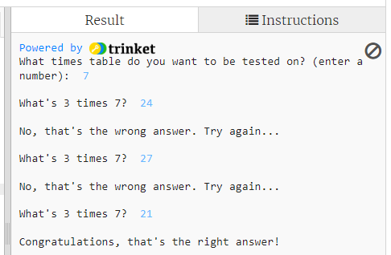
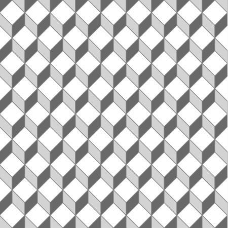

Here are some Python coding challenges to test you!
- Round the block
Add some code at the end of this programme to get the turtle called t to
go round the block and end up where it started. Use as few lines of code as you possibly can!
The block is 200 pixels across by 200 pixels high.
Click on Run to show the turtle screen.
If this trinket doesn't display properly you can go to the trinket page here.
- Flower Power!
Can you programme the turtle to make this picture:
Just follow the instructions in the comments in the trinket below.
If this trinket doesn't display properly you can go to the trinket page here.
- Torturous Times Table Tester
Can you complete the code to make a times table tester that will give you an output like this?

Start by working out the code to calculate the correct value of the variable correct_answer then put in
lines to print the variables times_table, rand_num and correct_answer
just to check your code is working. (You can comment out these lines later.)
Then you need to use the input() function to ask the question, using the variables times_table and
rand_num. Then you need an if block to check if the user has typed in the correct answer. The code
needs to give a different response depending on whether the user got the right answer or not.
Be careful!! You have to keep in mind the type of the variables - which means whether they are integer
type or string type, and you will have to convert some numbers from integer to string and some from string to integer to
prevent errors!
If this trinket doesn't display properly you can go to the trinket page here.
- Shortest code
Here you have to write code to get a Python turtle through a zig-zag course. Click on Run to show the course.
Your turtle has to start on the red square and get to the green square. Make sure it draws a line behind it as it goes,
but beware, the line is not allowed to cross any of the black space.
You are trying to write the shortest code possible. You are allowed as many lines as you want to set up your turtle, set its
initial heading, colour and position. The counting begins with your code to move the turtle from the red square.
Can you beat the record of 11 lines of code??????
If this trinket doesn't display properly you can go to the trinket page here.
- Sort me out
Here are eight variables each containing a text string. Print them out in alphabetical order to find something nice!
If this trinket doesn't display properly you can go to the trinket page here.
- Starry Night
Can you you create this night sky picture:
Just follow the instructions in the comments in the trinket below.
If this trinket doesn't display properly you can go to the trinket page here.
- What's in a list?
This challenge is all about Python lists.
A Python list consists of a series of items, separated by commas, inside square brackets [].
Lists are very closely associated with Python for loops and some of these challenges will also include writing loops.
There are three lists - you have to find different ways of printing out all the contents.
If this trinket doesn't display properly you can go to the trinket page here.
- It all adds up
The code contains two lists of more than 1000 numbers. For the first list all you have to do is
write code to add them all up and display the total!
For the second list all you have to do is square each number and add up all the squares (and display the total).
If this trinket doesn't display properly you can go to the trinket page here.
- "2, 4, 6, 8, Don't we love to tesselate!"
Can you programme the turtle to make this picture:
There are instructions in the comments in the trinket below but some of the instructions are repeated here, with example pictures.
When you run the code you will see a green arrow pointing to the right. The whole arrow is 100 pixels long with the triangular part
50 pixels from side to side, and 60 pixels high, while the rectangular stem is 50 pixels long from side to side and 30 pixels high.
The first instruction is to copy the four lines of code
which are highlighted, and paste these in above the line which says screen.update(). In the pasted code change
the turtle's fill colour to 'red' and put in a different heading until you get a green arrow and a red arrow point to
point like this:
Both arrows have their points at coordinates (x, y) and you will see that in the code x and y are both set to 0. But now you have to
adjust the coordinates for the red arrow so that the bottom sloping edge of the red arrow lines up exactly with the top sloping edge
of the green arrow, like this:
You can do this by changing the goto() instruction for the red arrow to a.goto(x - ?, y + ?) but you need to work out
what numbers to put in in place of the question marks. You can check you have the right numbers by changing the values
of x and y near the top of the code, and check that the two arrows move together to whatever
location you choose.
Now we've got code to draw two joined arrow shapes we need to put all this code (nine lines in all) inside a function.
Start your function with this line:
def tile(x, y):
above the line which says a.fillcolor('lightgreen') and make sure the nine lines which are going inside the function
are indented.
Just having a function won't do anything - we need to call the function. At the end of the code put the line
tile( , )
with two numbers inside the brackets which are the x and y coordinates of the point where you
want to draw the arrows.
Now call the function again (add another line after the last one) but this time with the x coordinate 100
more than it was before. Then add a third function call with the x coordinate 100 more again. You should
end up with a picture looking similar to this:
What you need now is to set the starting x coordinate to a position at the left edge of the screen, and have it increase in jumps of
100 until it goes beyond the right edge of the screen, calling the tile(x,y) function for each jump. You can do
this using a Python for loop with a range() function where you put three numbers inside
the brackets.
Once you have a for loop which draws the double-arrow pattern all across the screen you then need another
for loop to do the same thing for the y coordinate (again using the range() function
with three numbers inside the brackets, except the size of the jump will be different).
The clever trick is the put the x-coordinate for loop inside the y-coordinate for loop.
This will give the arrow pattern filling the whole screen!
If this trinket doesn't display properly you can go to the trinket page here.
- "2, 4, 6, 8, 10, now we tesselate again!"
Here is a more interesting tesselation picture to create:

You can use almost exactly the same approach here as you did with the previous tesselation challenge.
But now we have three turtle shapes, called 'diamond', 'left_rhombus' and 'right_rhombus',
and they need to be drawn using three different fill colours (that's the colour that goes inside the turtle) while the
pen colour (which is the colour of the outline) remains the same. This diagram shows the three shapes drawn together,
while the turtle stays at coordinates (0, 0) and using the colours 'white' for the diamond, 'lightgrey' for
the rhombus on the left and 'dimgrey' for the rhombus on the right. The diagram also shows the dimensions in pixels of
the different parts of the shapes.
If you run the code it will draw the turtle showing the 'diamond' shape, with fill colour 'white' at coordinates (0,0).
The first instruction is to copy the three lines of code highlighted by the comment, and paste these three lines twice.
In the first three pasted lines you will change the turtle shape to 'left_rhombus' and the turtle fill colour to
'lightgrey', and in the second three pasted lines you will change the turtle shape to 'right_rhombus' and
the turtle fill colour to 'dimgrey'.
Run the code and you should now see a display like this:
As in the previous tesselation challenge you now need to take the 11 lines of code, starting with the line
t.goto(0,0)
and the three lines you copied, and the six lines you pasted and the line with the code screen.update()
and turn these into a function. Start the function with the code:
def draw_three_shapes(x,y):
and change the coordinates in the t.goto(0,0) line to t.goto(x,y). Don't forget to indent
all the lines which are inside the function.
In the section 'main code' call your function with the coordinates (0,0) and check you still see the same display.
Now you need to put your code to call the function inside a for loop so it repeats with a changing x
coordinate. Use a range() function as you did before, but you will have to work out the three numbers to put in
the brackets. Try to get your code to draw a picture like this:
Now made a for loop for the y coordinate, and put the loop for the x coordinate inside
this loop. Use range() with three numbers in the brackets and try to get the screen looking like this:
Both arrows have their points at coordinates (x, y) and you will see that in the code x and y are both set to 0. But now you have to
adjust the coordinates for the red arrow so that the bottom sloping edge of the red arrow lines up exactly with the top sloping edge
of the green arrow, like this:
You can do this by changing the goto() instruction for the red arrow to a.goto(x - ?, y + ?) but you need to work out
what numbers to put in in place of the question marks. You can check you have the right numbers by changing the values
of x and y near the top of the code, and check that the two arrows move together to whatever
location you choose.
Now we've got code to draw two joined arrow shapes we need to put all this code (nine lines in all) inside a function.
Start your function with this line:
def tile(x, y):
above the line which says a.fillcolor('lightgreen') and make sure the nine lines which are going inside the function
are indented.
Just having a function won't do anything - we need to call the function. At the end of the code put the line
tile( , )
with two numbers inside the brackets which are the x and y coordinates of the point where you
want to draw the arrows.
Now call the function again (add another line after the last one) but this time with the x coordinate 100
more than it was before. Then add a third function call with the x coordinate 100 more again. You should
end up with a picture looking similar to this:
What you need now is to set the starting x coordinate to a position at the left edge of the screen, and have it increase in jumps of
100 until it goes beyond the right edge of the screen, calling the tile(x,y) function for each jump. You can do
this using a Python for loop with a range() function where you put three numbers inside
the brackets.
Once you have a for loop which draws the double-arrow pattern all across the screen you then need another
for loop to do the same thing for the y coordinate (again using the range() function
with three numbers inside the brackets, except the size of the jump will be different).
The clever trick is the put the x-coordinate for loop inside the y-coordinate for loop.
This will give the arrow pattern filling the whole screen!
If this trinket doesn't display properly you can go to the trinket page here.